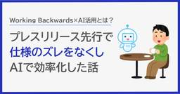

RAKUS Developers Blog | ラクス エンジニアブログ
https://tech-blog.rakus.co.jp/
株式会社ラクスのITエンジニアによる技術ブログです。
フィード
フロントエンドがUI設計を担う 〜価値提供スピードを高めるための役割の引き直し〜 37
37
RAKUS Developers Blog | ラクス エンジニアブログ
こんにちは。『楽楽請求』でフロントエンドを担当しているtakenamiです。 『楽楽請求』では立ち上げ当初から、要件定義から画面仕様の作成までを設計チームが担い、開発チームがそれを実装するという分担で開発を進めてきました。2024年10月のリリースから約1年半が経った2026年4月、顧客への価値提供スピードをさらに高めるための部の方針として、UI設計をフロントエンドが担う体制へと移行しています。 実際に担ってみると、実装を担当していた頃には見えていなかった景色と、いくつもの壁にぶつかりました。この記事では、この体制に至った背景・進め方と、現時点で向き合っている課題をお伝えします。 1. 前提と…
5日前

Working Backwardsを給与計算オプションの開発に取り入れ、AIで上流工程を効率化した話 8
RAKUS Developers Blog | ラクス エンジニアブログ
目次 はじめに 前提：私たちのチームの開発の進め方 Working Backwardsに着目した理由 「機能リリース概要」という形にアレンジした 課題は、文章を書く手間 AIで上流工程を効率化する まとめ
6日前

「動いた」で終わらせないAI機能開発 ── 検証から本番運用までの4ステップ
RAKUS Developers Blog | ラクス エンジニアブログ
はじめに LLMのAPIを叩いて何かを作ること自体は、ずいぶん手軽になりました。プロンプトを書いて実行すれば、それらしい出力が返ってきます。 ただ、「手元で動くもの」と「お客様に提供できる機能」の間には、かなりの距離があります。手元では良い感じの出力が出ていたのに、いざ幅広いデータで試すと精度が安定しない。精度は出たけれど処理が遅すぎる、あるいはコストが見合わない。本番のコードに載せ替えたら、なぜか検証時と結果が変わってしまう。このあたりで足踏みした経験のある方も多いのではないでしょうか。 そこで本記事では、LLMを使った機能開発を進める際の「何から手をつけて、どういう順番で進めるべきか」とい…
8日前
仕様が固まらない案件だからこそ、概要設計書をAIに書かせた
RAKUS Developers Blog | ラクス エンジニアブログ
【目次】 AIが入っていない場所を探したら、上流工程が残った なぜ「概要設計書」を選んだのか 「書き直させる」前提で、最初からAIに書かせた つまずいたのは、スライドのデザインとUIのデザインの混在 ツール選定に、20分以上かけない 体感で2〜4倍。ただし数値化はこれから 生まれたバッファは、顧客の声を拾う時間へ まとめ こんにちは、ラクス技術広報です。 開発本部では、各部署でのAI活用の取り組みを技術広報がインタビューし、記事としてお届けしています。今回お話を伺ったのは、経費・請求・販売管理などのクラウドサービスを展開するラクスで、販売管理クラウドサービス「楽楽販売」の開発を担う 楽楽販売開…
12日前
【2026新卒研修】自分が LGTM した理由を20分以上調べ直した話
RAKUS Developers Blog | ラクス エンジニアブログ
こんにちは。2026年4月にラクスに入社し、楽楽精算開発部に配属された木村です。 この記事では、入社してから実務に入るまでの約4ヶ月間に受けた研修の内容と、配属後の研修中に学んだことを書きます。ラクスのエンジニア職に興味がある方のご参考になれば幸いです。 研修の内容は年次によって変わる可能性があるため、ご注意ください。 なぜラクスを選んだか 入社から実務に入るまでの流れ 新入社員合同研修 技術研修 配属後研修（楽楽精算） 配属後研修で得た気付き おわりに
14日前
AIの判定は"毎回同じ"にできるのか — 問い合わせをAIエージェントに任せた保守開発チームの話
RAKUS Developers Blog | ラクス エンジニアブログ
こんにちは！楽楽精算開発部 の yamaguchi877 です。 「保守開発チーム」と聞くと、障害発生時の地道な調査やお客様からの問い合わせ対応に追われる姿を想像される方が多いかもしれません。 ですが私たちのチームでは問い合わせの切り分けと一次調査をAIエージェントに任せる仕組みを構築・運用し始めています。 本記事では、その仕組みづくりで直面した 「AIの判定を毎回同じにするにはどうすればいいのか」 という壁を紹介しつつ、 私たちなりの答え（固定ルーブリック＋回帰テストという設計）とあわせて、構想から運用までの試行錯誤をご紹介します。 抱えていた課題 — 問い合わせ対応と開発時間の綱引き 全体…
16日前
アーキテクチャの意思決定プロセスを AI で効率化する ― 思考の流れを分解してSkills化する
RAKUS Developers Blog | ラクス エンジニアブログ
こんにちは、楽楽販売開発課のdon （頓花）です。 あるサブシステムをゼロから設計する機会があり、ADR（Architecture Decision Record／アーキテクチャ上の意思決定を記録するドキュメント）を書く場面が一気に増えました。 そこで Claude Code を検討プロセスそのものに組み込んでみたのですが、最初に作った仕組みは、実際に走らせてみるとひどいものでした。エージェントが 1 体で 約60分 動き続ける。工程の境界でユーザー確認が 20 回近く飛んでくる。レビューが 3 巡目に入ってもう何も新しい指摘が出ない。 この記事は、そこから何を直したかの記録です。 この記事で…
19日前
ループとグラフは別物じゃない — 「検証の積み木」でエージェント設計を整理してみた
RAKUS Developers Blog | ラクス エンジニアブログ
はじめに 先に用語を固定します 結論から：これは「検証の積み木モデル」です 第1層：LLM単発推論 — 検証がない世界 第2層：ReAct — 「できたか」を自分で確認する 第3層：ループエンジニアリング — 合否判定を、作った本人の外に出す これ、人間がやってた作業ですよね ただし、1つの成果物の中では判定できないものがある 第4層：グラフエンジニアリング — 目的適合の検証と、ループ同士の配線 なぜ抽象度が上がっていくのか 自己流の判断基準 まとめ 参考
21日前
仕様駆動開発、導入半年。「本当に速くなってるの?」にデータで答える
RAKUS Developers Blog | ラクス エンジニアブログ
こんにちは、ラクス技術広報です。 2026年7月15日、主催イベント「RAKUS AI Conference 2026 Summer」を開催しました。本記事では、楽楽精算 開発3課の平川裕多さんが発表した「仕様駆動開発、導入半年。『本当に速くなってるの?』にデータで答える」について、技術広報がレポート記事でご紹介します。 この記事はこのような方におすすめです AI活用で実装は速くなった気がするのに、なぜか設計やレビューの負荷が増えていると感じているエンジニアの方 仕様駆動開発(SDD)の導入を検討している、あるいは導入したものの効果を数字で説明できずに悩んでいる方 「AIネイティブな開発」を、…
1ヶ月前
楽楽精算AIエージェントを支える、LLMOpsとインフラの選択肢
RAKUS Developers Blog | ラクス エンジニアブログ
こんにちは、ラクス技術広報です。 2026年7月15日に開催した主催イベント、「RAKUS AI Conference 2026 Summer」の5本のセッションのうち3本目に登壇したのが、AIエージェント開発課の竹田舜さんです。 テーマは「PoCから本番へ―楽楽精算AIエージェントを支える、LLMOpsとインフラの選択肢」。 CTOや役員による組織戦略の話に続き、現場のエンジニアが実際に何を判断してきたのかという、解像度の高い知見が語られたセッションでした。竹田さんが語ったのは、「AI専用の特殊なものというよりは、慣れているもの、知見のあるものを優先して素早く構築しました」という意思決定です…
1ヶ月前
顧客の声から生まれた『AI返信補助機能』の開発プロセス
RAKUS Developers Blog | ラクス エンジニアブログ
2026年7月15日、オンラインイベント「RAKUS AI Conference 2026 Summer」を開催しました。本記事では、その中の1セッション「顧客の声から生まれた『AI返信補助機能』の開発プロセス」（登壇：楽楽自動応対AI開発課 四方大輔さん・今井陸斗さん）の内容を、技術広報がレポート形式でまとめます。 「作ったのに使われないAI機能」、心当たりはありませんか 半年間、精度を上げ続けてもお客様の声は変わらなかった 顧客に直接聞いて分かった、担当者が本当に困っていたこと 「メール作成AI」から「メールアシスタント」への方向転換 ドキュメントではなく「動くもの」でお客様と議論する あ…
1ヶ月前
AIを載せることはゴールではない。ラクスCTOと開発副本部長が語った、組織とプロダクトの変革
RAKUS Developers Blog | ラクス エンジニアブログ
2026年7月15日、ラクスは自社イベント「RAKUS AI Conference 2026 Summer」を開催しました。オープニングは、CTO 兼 開発本部長の「公手 真之」と、執行役員 兼 開発本部 副本部長の「矢成 行雄」による2つのセッションです。 一方は「AIネイティブな開発組織をどう作るか」という組織の話。もう一方は「複数のプロダクトにAIをどう実装するか」というプロダクトの話。扱う対象は違いますが、2人が最後に置いた結論は同じでした。AIを載せること自体はゴールではない、というものです。 「SaaS is dead?」にどう答えるか 組織の話：ツールを導入すれば、AI駆動開発は…
1ヶ月前
Claude Codeのスキル設計で効く4つのポイント —— 「AIへの仕事の任せ方」を意識した設計
RAKUS Developers Blog | ラクス エンジニアブログ
こんにちは、菊池（akikuchi_rks）です。 私の所属するチームではClaude Codeを開発フローに取り入れており、私自身も設計書のレビューや定型調査の自動化など、さまざまな業務でスキル（Agent Skills）を作成してきました。 スキルを書き続けていて特に感じるのは、「とりあえず動くスキル」と「安定して業務に組み込めるスキル」は別物だということです。同じスキルなのに実行のたびに結果の形が変わる、自分は使えるのにチームメンバーが動かすと品質が落ちる、という悩みに心当たりのある方も多いのではないでしょうか。 私はこの差を分けるのは、AIにどう仕事を任せるかをしっかり設計できているか…
2ヶ月前
【ラクス】クラウドサービスを支える技術スタック公開（2026年度版）
RAKUS Developers Blog | ラクス エンジニアブログ
こんにちは、技術広報のyayawowoです。 私たち株式会社ラクス開発本部では、Missionである 「顧客の成長を支援する、圧倒的に使いやすいクラウドサービスを創り提供する」 を念頭に、日々プロダクト開発に励んでいます。 現在、ラクスでは歴史あるロングセラーのプロダクトから、近年立ち上がった新規プロダクトまで、多くの開発プロジェクトが並行して動いています。このように古いものから新しいものまで多くのプロダクト開発に深く携われるからこそ、エンジニアやデザイナーが触れられる技術の機会が非常に多い点が、私たちの組織の大きな特徴であり魅力です。 本記事では、各プロダクトの「技術スタック」を改めて整理し…
2ヶ月前
「楽楽精算」AIエージェント実装で立ちはだかった3つの壁と突破の裏側
RAKUS Developers Blog | ラクス エンジニアブログ
こんにちは！AIエージェント開発課です。 近年、生成AIの進化スピードは凄まじく、単なるテキストの要約やドラフト生成の枠を超え、自律的に判断してタスクを実行する「AIエージェント」が大きなトレンドとなっています。 このような技術的な潮流の中、私たちのチームは2025年5月に「AIエージェント開発課」として産声を上げました。累計導入社数 約20,000社以上の顧客基盤と、16年以上にわたって蓄積された膨大な業務データ（ドメイン知識）というラクスの強みを活かし、バックオフィス業務の「完全自動化」という未来へ向けて、日々泥臭く開発を続けています。 私たちがメインで取り組んでいるのは、主力プロダクトで…
2ヶ月前
梅田で「Claude Codeの使い方・育て方」を語り合ってきました！ ── Claude Code Meetup Osaka 登壇レポート
RAKUS Developers Blog | ラクス エンジニアブログ
こんにちは、ラクスでバックエンドエンジニアをしている斉田真也（GitHub: shinya / X: @saita_shinya）と申します。業務のかたわら、Markdownエディタ Bokuchi を個人で開発していて、仕事でも個人開発でも、いまやClaude Codeはすっかり相棒になっています。 先日大阪の梅田で開催された Claude Code Meetup Osaka に参加し、LT枠でも登壇してきました。AIは失敗する。でもその失敗を"使い捨て"にせず記録して次に読ませれば、二度目から同じつまずきを繰り返しにくくなる ── 私が登壇で話したのは、そんな「Claude Codeの育て…
2ヶ月前
「使われる」機能を、2週間で届けるまで — AI時代の顧客志向開発
RAKUS Developers Blog | ラクス エンジニアブログ
「自分が時間をかけて作った機能、ちゃんと使われていますか？」 エンジニアだったら、たぶん一度は胸の奥に刺さる問いだと思います。仕様書通りに作って、テストも通って、リリースして。でも数か月後にログを見るとあまり利用されていない。そういった経験があるかと思います。 この記事では、冒頭の問いに対して「ちゃんと使われている」と言える機能を開発できた事例を紹介します。AIを活用することで2週間でベータ版提供までこぎつけ、楽楽自動応対の翻訳機能が最終的に「この機能の導入前にはもう戻れない」と顧客に言ってもらえるまでの裏側です。 実際の業務フローをヒアリングすることで機能への解像度を上げた 社内の認識合わせ…
2ヶ月前
同じAWS Summit、でも去年とは全然違った — 自社開発1年目の視点
RAKUS Developers Blog | ラクス エンジニアブログ
「勉強のため」から「持ち帰るため」に変わった アウトカムを意識するようになった 将来の自分たちが楽になるかどうかで見ている レベル300のセッションが「ちょうどいい」と感じた AI一色、そしてフィジカルAIの存在感 まとめ
2ヶ月前
【Devin活用】Spring Boot 3系 → 4系 へのメジャーバージョンアップの影響調査
RAKUS Developers Blog | ラクス エンジニアブログ
1. はじめに この記事で書くこと この記事で書かないこと 前提 2. バージョンアップ作業フロー Step 1：メジャーバージョンアップによる影響調査 Devin の Playbook を作成する Devin の Playbook を実行して一覧化する Step 2：対応が必要かどうかの判断と方針検討 Step 3：更新作業 3. AI 活用の所感 影響度判定の精度評価 良かった点 微妙だった点・反省 4. まとめ 5. 今後の展望 参考文献
2ヶ月前
Zedいいですよ
RAKUS Developers Blog | ラクス エンジニアブログ
はじめに 私が開発ツールに求めることをZedは満たしていた すぐに開けること コードが追いやすいこと 複数画面を上下左右に開けること ディレクトリがツリーで開けること Git関連機能にアクセスしやすいこと VSCode、Ghostty、Zedを比較する Zedの使用感 Zedの微妙なところ ACP経由のエージェント体験はCLIより遅く感じる ファイルパスクリックで開けない VSCode拡張に依存している人は移行しづらい まとめ
2ヶ月前
AI駆動開発の組織標準化に向き合う
RAKUS Developers Blog | ラクス エンジニアブログ
まず「測る」ことを設計した 「使わない」には、それぞれの理由があった AI活用は確かに進んだ。でも、浸透しきってはいない 顧客に届けるための、AI活用標準化 今期進める4つの取り組み 「エンジニア非稼働時間帯でも開発が進む」を目指して
3ヶ月前
350画面のUI統一、AIに任せたのは「セルフチェック」だった
RAKUS Developers Blog | ラクス エンジニアブログ
はじめに 楽楽シリーズUI統一プロジェクトとは フェーズ1: AIに任せられない領域 フェーズ2: 規模がもたらした新たな課題 AI活用の勘所: 実装ルールをAIに翻訳する なぜ「セルフチェック」だったか Cursor Rulesという仕組み 運用してみての手応え 振り返って見えたパターン 作業の性質とAI活用の相性 AI活用は、人間の作業との連携で成立する おわりに
3ヶ月前
Claude Code Meetup Japan #5でClaude Agent SDKを活用した脆弱性調査自動化について登壇しました！
RAKUS Developers Blog | ラクス エンジニアブログ
はじめに 登壇資料 登壇内容 発表の背景 なぜ全部自動化しなかったのか 作成したCLIの概要 半自動設計のポイント 細かいTips LLMに渡す範囲を狭くする 読み取りを自作ツールで行う ツールを絞る Claude Code標準プロンプトは必要な場所だけ使う 登壇してみて まとめ
3ヶ月前
JJUG CCC 2026 Springで初登壇してきた！
RAKUS Developers Blog | ラクス エンジニアブログ
はじめに JJUG CCCとは 登壇スライド 外部発信のモチベーション 登壇を通じて得られた気付き 振り返り
3ヶ月前
複雑なドメイン領域である給与計算オプションをリリースするまでにやったこと
RAKUS Developers Blog | ラクス エンジニアブログ
はじめに 給与計算オプションの開発で最初に困ったこと なぜ開発部だけでなく事業部にも給与計算の知識が必要だったのか まず、初心者向けの課題図書を選んだ MVP開発に必要な知識に絞って、学習コンテンツを作った 仕様説明では、「なぜその機能が必要なのか」まで説明した リリースまで進めるうえで大事だったこと 1. 自分だけが詳しい状態にしない 2. 開発部・事業部が必要な知識を持てるようにする 3. すべてを学ぶのではなく、今回必要な範囲に絞る 4. 仕様の背景や目的まで伝える まとめ
3ヶ月前
あなたはどのPdMタイプ？認知スタイルの考え方をヒントに作った「PdMタイプ診断」と、ラクス開発組織で試してわかったこと
RAKUS Developers Blog | ラクス エンジニアブログ
こんにちは、プロダクト部 部長の稲垣です。（自己紹介やこれまでのキャリアについて↓をご覧ください。） tech-blog.rakus.co.jp 今回は、私が作った「PdMタイプ診断」という取り組みについてご紹介します。 この診断は、既存の性格診断をそのまま用いたものではなく、PdMとしての思考や行動の傾向を整理するために、認知スタイルに関する考え方をヒントに独自に設計したものです。 診断の仕組みと、ラクスの開発組織で実施して見えてきたことをレポートします。 なぜ作ったのか 診断の仕組み：3つの軸、8つのタイプ 軸① コミュニケーション 軸② 価値の方向性 軸③ 志向性 ラクス社内で試してみた…
3ヶ月前
Codex UserコミュニティイベントにLT登壇してきました
RAKUS Developers Blog | ラクス エンジニアブログ
はじめに 本イベントについて 登壇内容の解説 他の方のLT登壇 まとめ
3ヶ月前
AI開発×顧客志向の開発を体験する、エンジニア職インターンシップ「RAKUS Tech Lab」
RAKUS Developers Blog | ラクス エンジニアブログ
こんにちは！ラクスのエンジニア採用担当です。 今回はラクスのエンジニア職のサマーインターン「RAKUS Tech Lab」を紹介します。 このインターンシップは、単にコードを書く体験ではありません。 チームで開発を進めながら、「何を作るべきか」から考えるプロセスを体験していただくプログラムです。 ラクスのエンジニアがどのようにプロダクト開発に向き合っているのか。 その一端を、3日間で感じていただけます。 インターンで大切にしている考えや、実際の流れ、参加いただいた方の声を紹介します。 ラクスが大切にしている「顧客志向」 インターンシップ「RAKUS Tech Lab」について 3日間の流れ D…
4ヶ月前
【SREの運用改善事例】CIとAIで改善するk8sエコシステムのバージョンアップ運用
RAKUS Developers Blog | ラクス エンジニアブログ
1. はじめに なぜ改善が必要だったか どんな改善をした？ 2. バージョンアップ運用フロー 2-1. CIによる機械的チェック（GitHub Actions） ①helm templateコマンドによるレンダリングチェック 実装詳細 ②PlutoによるKubernetes API互換性チェック 実装詳細 ③HelmChart展開後のマニフェスト差分把握 実装詳細 2-2. AIによる影響調査 AIレビューコメント例 なぜラベル起動にしたか プロンプト なぜDevinを選定したのか 3. 導入後の効果 4. 今後の展望 5. まとめ 参考文献
4ヶ月前
Kubernetesの非推奨/削除APIをGitHub Actionsで継続検知する仕組みを作った話
RAKUS Developers Blog | ラクス エンジニアブログ
こんにちは。SRE課のtaku_76です！ 今回はKubernetesマニフェスト内の非推奨API / 削除済みAPIを継続的に検知する仕組みについて紹介します。 PlutoとGitHub Actionsを使い、定期実行から検出結果の更新まで自動で行うようにしました。 他チームにも使ってもらうことを想定していたため、Plutoを実行するだけでなく導入方法や検知結果の確認方法まで含めて運用に乗せる形にしています。 はじめに 仕組みを作成した目的 全体像 利用者の負担を減らすために工夫したこと Issueを作るだけで管理対象に追加できるようにした 結果確認をIssueに集約した READMEを自動…
4ヶ月前